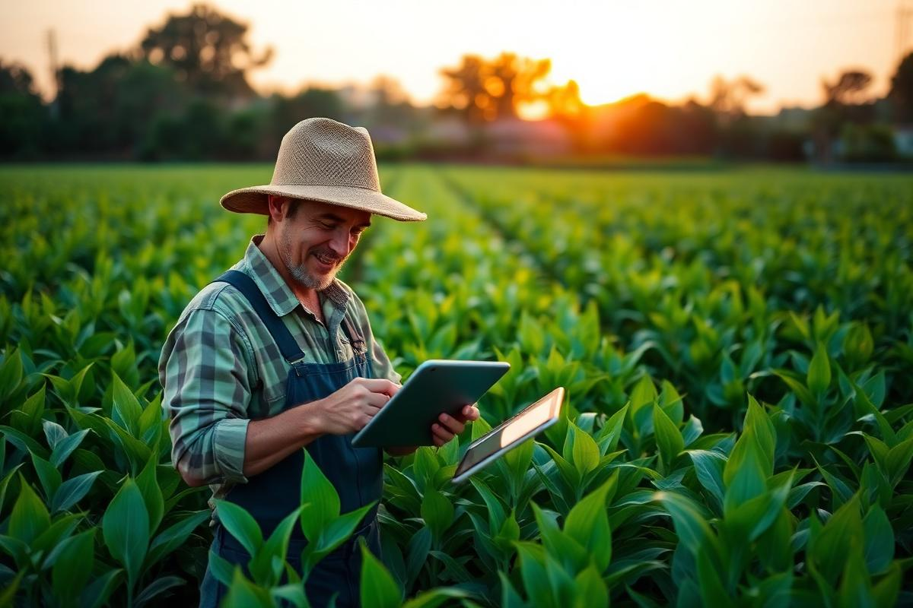
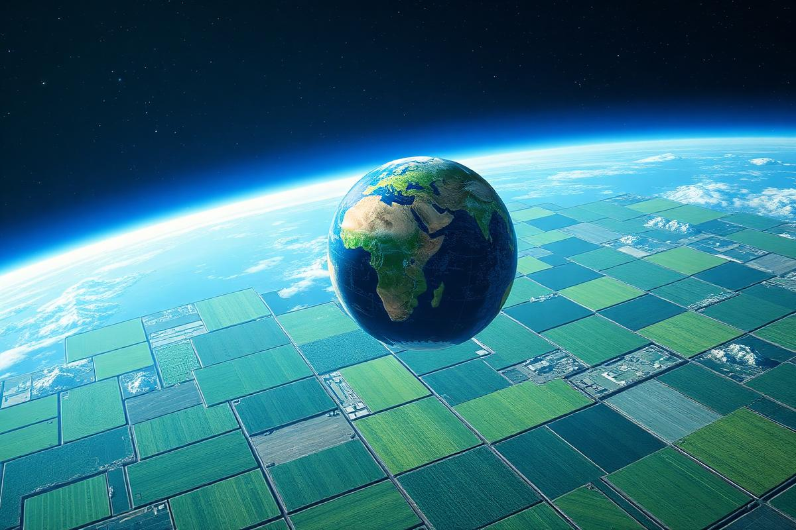
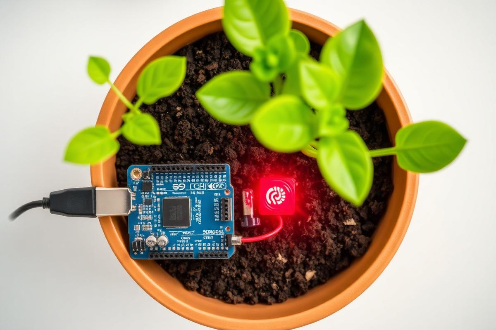

Para
Agricultores e produtores rurais que não possuem acesso à agricultura de precisão.
Global Solution 2026 · ODS 2 · ODS 9 · ODS 10 · ODS 13
AgroOrbit IA é um ecossistema que une sensores IoT, modelagem matemática e os fundamentos do sensoriamento remoto orbital para transformar dados brutos do campo em ações preditivas para o pequeno e médio produtor rural.
Seção 1 · Problema
Pequenos e médios produtores rurais permanecem à margem da revolução da agricultura de precisão devido ao alto custo das soluções corporativas. Sem métricas precisas, decidem por estimativas empíricas, gerando ciclos de irrigação incorretos, desperdício hídrico, degradação do solo e perdas de safra.


Seção 2 · Tecnologia
Seção 3 · Objetivos
Solução integrada que unifica hardware analítico, modelagem matemática e os fundamentos do sensoriamento remoto orbital — atuando como uma ponte de Total Experience (TX) que transforma dados brutos em ações preditivas.
Sensores microcontrolados medem umidade do solo, variações térmicas e luminosidade em tempo real.
Interface web intuitiva, projetada para a experiência do trabalhador rural (UX simplificada).
Alertas automáticos em cenários de risco como seca severa ou saturação hídrica.
Integração lógica com parâmetros de sensoriamento remoto via satélite para validar a inteligência local.
Seção 4 · Público-Alvo
Agricultores e produtores rurais que não possuem acesso à agricultura de precisão.
O AgroOrbit IA é uma plataforma agrícola inteligente que monitora lavouras com sensores e dados inspirados em monitoramento orbital.
Sistemas agrícolas caros e complexos, nosso produto oferece monitoramento acessível, alertas automáticos e análise agrícola em tempo real.
Seção 5 · Benefícios
Desperdício de água com turnos de rega otimizados matematicamente.
Produtividade estimada com diagnóstico precoce de risco.
Monitoramento contínuo de solo, clima e vegetação.
Fome Zero: democratiza a agricultura de precisão e a segurança alimentar.
Indústria, Inovação e Infraestrutura: IoT de baixo custo no campo.
Redução das Desigualdades: amplia o acesso à agricultura de precisão para produtores de diferentes portes, reduzindo desigualdades tecnológicas no campo.
Ação Climática: uso eficiente da água e prevenção a anomalias térmicas.
Seção 6 · Aplicação no dia a dia
Insira valores aproximados e veja o diagnóstico calculado a partir das funções matemáticas do projeto.
Risco calculado
—/100
Aguardando dados…
Web Development · Validação
Preencha todos os campos para simular o cadastro de uma área agrícola monitorada pelo sistema.

Web Development · Slideshow
Três imagens conectadas ao tema: campo, satélite e sensores IoT.
Backlog do Produto
Histórias mapeadas para a Global Solution, orientadas às necessidades reais do produtor rural.
Visualizar a umidade do solo para irrigar corretamente.
Receber alertas de seca para evitar perdas agrícolas.
Visualizar gráficos da plantação para acompanhar a produtividade.
Monitorar a temperatura ambiente para proteger a plantação do calor excessivo.
Visualizar relatórios agrícolas para analisar o desempenho da lavoura.
Cadastrar diferentes plantações para organizar minhas culturas.
Receber alertas de irrigação para economizar água.
Acompanhar a luminosidade da plantação para entender condições ambientais.
Acessar uma dashboard interativa para visualizar dados em tempo real.
Visualizar o status geral da plantação para tomar decisões rapidamente.
Armazenar o histórico agrícola para comparar resultados anteriores.
Visualizar indicadores de risco agrícola para prevenir prejuízos futuros.
Web Development · Quiz Dinâmico
Responda 10 perguntas sobre agricultura inteligente, dados orbitais e sustentabilidade.
Pergunta 1 de 10
Carregando pergunta...
0/10 acertos